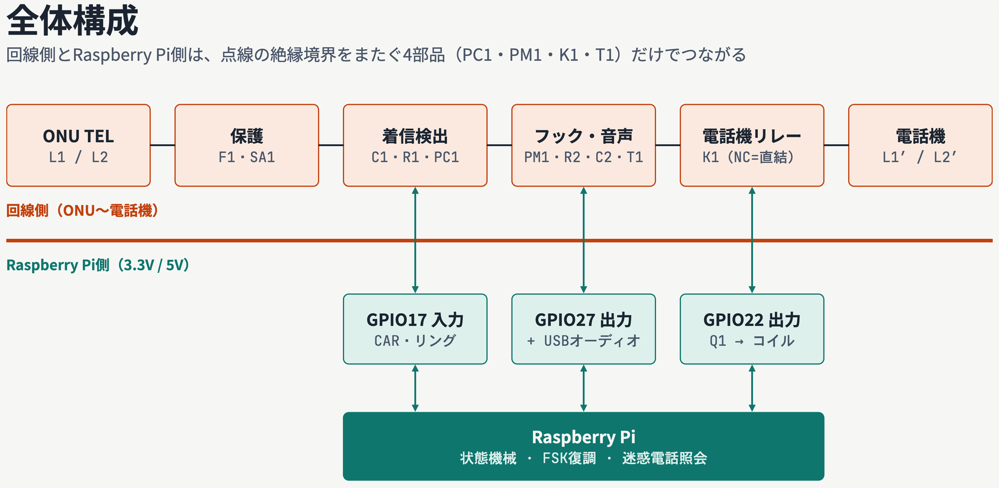
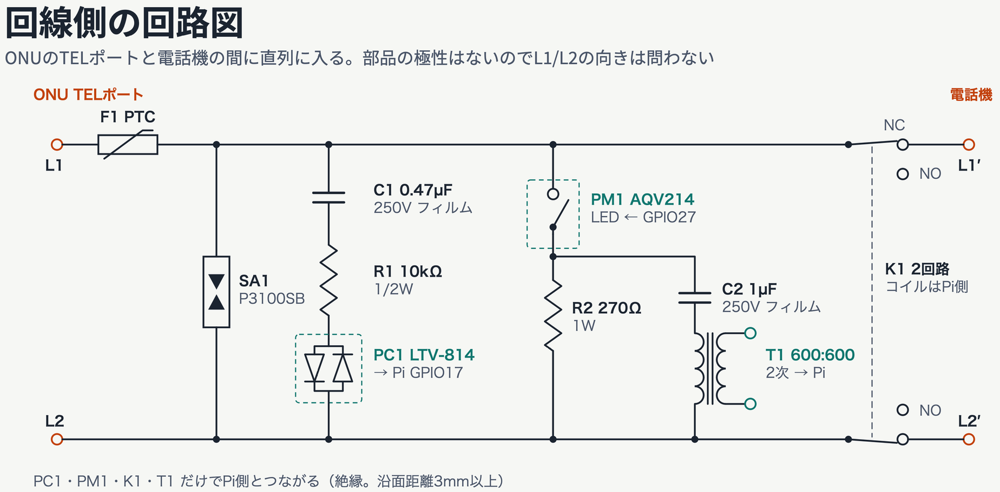
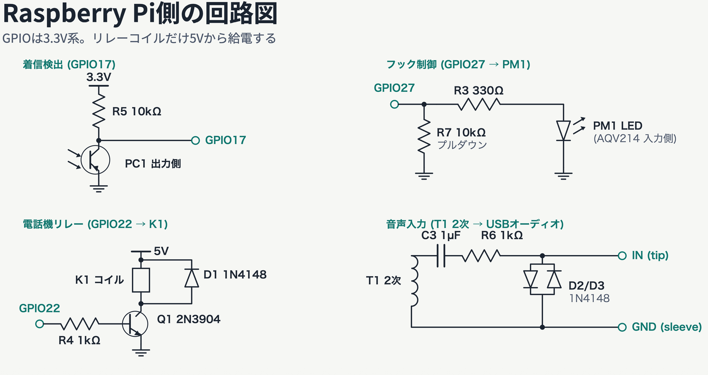

📙 屋内の電話線から発信者番号を抜き出す【構想のみ】¶
2026/11/21公開 2026/11/21更新
質問者: Shigeru Morifuku
回答者: Claude Opus 5.5
回答日: 2026/11/21
免責: 回答者は AI であり、間違えることがあります。
注意1: 回答内容は一部編集しています。作成したハードを実回線に繋ぐには技術基準適合認定が必要です
注意2: 本電子工作は構想のみで実装は見送っています。
Q: 🟩 屋内の電話線（Nuro光電話）から、発信者番号をRaspberryPiで取り出せる？¶
はい、取り出せます。
🟨 前提：回線側でND契約が要る¶
NTTでもNuro光でんわでも、ナンバー・ディスプレイは有料オプションです。契約していない回線には番号データが送られてこないので、機材をいくら工夫しても取れません。
🟨 日本式NDの信号の流れ¶
交換機（光回線ならONUのアナログポート）が、呼出音の前にCAR信号（短い断続リンガ）を送る
端末が回線をループ閉結して応答する（一次応答）
番号データがFSK（ITU-T V.23系、1200bps）で送られてくる
端末がオンフックに戻り、そこから通常の呼出音が始まる
🟨 実現方法¶
必要な回路：保護素子、絶縁トランス、CAR・リング検出（フォトカプラ）、一次応答用のループ閉結（フォトMOSリレーと直流抵抗）、FSK復調（V.23に対応したFSKデコーダICか、オーディオADCを使ったソフト復調）。
Raspberry PiのGPIOでCAR検出から一次応答までのタイミングを制御し、復調したビット列からNDのフレーム（番号などのパラメータ）を取り出します。
注意点が2つあります。
一次応答のタイミングが遅いと、番号が送られずに着信が進んでしまいます。
技術基準適合認定のない自作機器を通信事業者の回線やONUにつなぐのは、電気通信事業法上グレーではなく原則NGです。実験は疑似交換機など、手元で完結する環境で行うのが無難 です。
Q: 🟩 市販モデムをつかってデコードするの？¶
いいえ、市販モデムは必須ではありません。NDの信号はモデム通信の一部分だけを使った単純なものなので、V.23のFSKを受信できる回路があれば足ります。
🟨 NDのFSK信号の中身¶
方式はITU-T V.23の1200bps FSK（1シンボル1ビットなので1200ボー＝1200bps）
マーク（1）は1300Hz、スペース（0）は2100Hz
交換機（Nuroの場合はONUのTELポート）から端末へ一方向に送るだけで、ネゴシエーションも送信も不要
データは調歩同期（スタートビット＋8ビット＋ストップビット）のバイト列で、マーク信号に続けてヘッダ、番号などのパラメータ、チェックサムの順に流れる
つまり実体は「1300/2100Hzの2トーンを聞き分けて、1200bpsのUARTとして読む」処理です。
🟨 市販モデムとの関係¶
方式 |
使える？ |
|---|---|
300bps（Bell 103 / V.21） |
周波数も速度も違うので不可 |
1200bps（Bell 202） |
米国の発信者番号はこの方式。マーク1200Hz/スペース2200HzとV.23とは周波数が違う。両方に対応したデコーダICなら可 |
1200bps（V.23） |
NDそのもの |
9600bps以上のデータモデム（V.32/V.34/V.90） |
速度は関係ない。ファームウェアが日本のND（CAR検出、一次応答、V.23受信）に対応していれば使える。非対応ならV.23を復調する能力があっても番号は出ない |
市販モデムでNDが取れるかどうかは、通信速度ではなく日本向けND対応ファームウェアを積んでいるかで決まります。
🟨 自作するときのデコード方法¶
A. FSKデコーダICを使う
例：HT9032D（Bell 202とV.23の両方に対応）
出力がそのままシリアルのビット列になるので、Raspberry PiのUART（1200bps 8N1）に入れて読むだけです。ソフトは非常に簡単になります。
B. ソフトウェアで復調する
回線から絶縁トランスで音声を取り出し、USBオーディオ（8kHz以上でサンプリング）で取り込みます。
1300Hzと2100HzをGoertzelや直交検波で判定し、1200bpsで再サンプリングしてUARTのフレームを組み立てます。
Raspberry Piの性能なら余裕で、C/C++でも数百行程度です。ICの入手性に左右されず、波形を保存して後から解析できるのも利点です。
🟨 どちらの方法でも共通して必要なもの¶
NDはFSKを復調できるだけでは番号が来ません。以下の部分は自分で作る必要があります。
CAR信号の検出：フォトカプラで呼出信号を検出し、通常のリング（1秒ON/2秒OFF）と、CARの短い断続を周期で見分ける
一次応答：CARを検出したらフォトMOSリレーで直流ループを閉結する。これで初めてFSKが送られてくる
FSKの受信とパース：上のAまたはBで受信し、パラメータを解析する
一次応答の解除：受信後にループを開放する。その後、通常の呼出音が始まる
おすすめはBのソフト復調です。音声入力1本とGPIO 2本（CAR・リング検出の入力、ループ閉結の出力）で構成でき、C/C++で完結させやすいです。必要なら、Goertzel版のV.23復調とNDフレームのパーサをC++で書きます。
Q: 🟩 案Bの場合、ナンバー・ディスプレイ対応の電話機が必要なの？そうだとあまり意味がない¶
いいえ、非対応の電話機でもBは成り立ちます。CARに一次応答してFSKを受け取るのは自作機の役目で、電話機はその間なにもしなくていいからです。
🟨 非対応の電話機をそのまま並列につないだ場合¶
番号は自作機が取れます。電話機側で起きるのは次のことだけです。
CARの間、電話機のベルが「チリチリ」と短く鳴る
一次応答から受信が終わるまでの数秒、待たされる
これは回線事業者も想定している動作で、ナンバー・ディスプレイ非対応の機器をつなぐと、短い断続した呼出音の後に通常の呼出音が聞こえるので、通常の呼出音に変わってから電話に出るようにと案内されています。CARの短いベルが気にならないなら、これだけで動きます。
🟨 自作機を直列に入れる場合（ND対応アダプタ方式）¶
ONUと電話機の間に自作機を入れ、電話機の回線をリレーで切り替えます。
待機中は電話機を回線から切り離しておく（またはCARを検出した瞬間に切り離す）
自作機がCARに一次応答してFSKを受信し、ループを開放する
通常のリングが始まったら電話機を回線に戻す
これで電話機はCARで鳴らず、普通の着信として鳴ります。市販のナンバー・ディスプレイアダプタがやっているのと同じことです。そのため、ND対応電話機を買う必要はありません。
🟨 注意点¶
並列でつなぐ場合、CARに勝手に応答してしまう非対応の留守番電話やFAXが同じ回線にあると、うまく動かないことがあります。
Q: 🟩 ND対応アダプタ方式にしたい。回路図描いてください¶
🟨 全体構成¶

電話機と直列に入れるアダプタ方式で書きます。回線側（ONU〜電話機）とRaspberry Pi側は、フォトカプラ、フォトMOSリレー、メカリレー、トランスの4か所だけでつながり、それ以外は電気的に絶縁しています。
🟨 回線側（ONUのTELポートから電話機まで）¶

F1と SA1（保護）：F1はPTCヒューズ（通信用、0.1〜0.15A程度）、SA1はSIDACtor（P3100SBなど、Vdrm 275V）。呼出信号のピークはDC 48VにAC 75Vrmsが重なって約155Vになるので、それより上で動作し、雷サージは逃がすものを選びます。
着信検出（C1、R1、PC1）：16Hzの呼出信号で約3mA流れ、フォトカプラのLEDが光ります。C1が直流を止め、通話音声やFSKは振幅が小さいので反応しません。CARと通常のリングの区別は、ソフト側で断続の周期を見て行います。
フック回路（PM1、R2）：PM1をONにするとR2で直流ループが閉じ、一次応答になります。オフフックの直流抵抗は約300Ωに収まる値にしています（R2の270ΩにPM1のオン抵抗が足されます）。拒否時に案内を流すときも、同じ回路でオフフックします。
音声の取り出し（C2、T1）：PM1がONの間だけ回線につながります。C2で直流を止めているので、T1に直流が流れて飽和することはありません。T1は600:600のライントランスで、ジャンクのモデム基板から外したものでも使えます。
電話機の切り替え（K1）：2回路のリレーです。電源が落ちていて非励磁のときはNC側で電話機が直結されるので、Raspberry Piが止まっても電話は普通に使えます。
極性に依存する部品はないので、L1とL2を逆につないでも動きます。
🟨 Raspberry Pi側¶

GPIO17：PC1の出力が、16Hzの呼出信号に合わせて32Hzのパルス列になります。ソフト側で包絡を取ってON/OFFの区間を判定します。
GPIO27：PM1のLEDを直接駆動します（約6mA）。
GPIO22：トランジスタでK1を駆動します。電話機を切り離すときに励磁します。
音声：USBオーディオのマイク入力は先端にプラグインパワーのバイアスが出ていることがあるので、C3で直流を止めます。D2とD3はサージが来たときのクランプです。
案内音声を流したい場合は、USBオーディオの出力を100Ωと1µFを通してT1の2次側に足すだけで済みます（自分の送話音が入力にも回り込みますが、実用上は問題ありません）。
Q: 🟩 ソフトウェアの作成方法は？¶
最終的に、「電話が鳴る前に、発信者番号で迷惑電話DBをクエリして、モニタに表示」するようにしたかった。試せるハードがないので、ここまで。